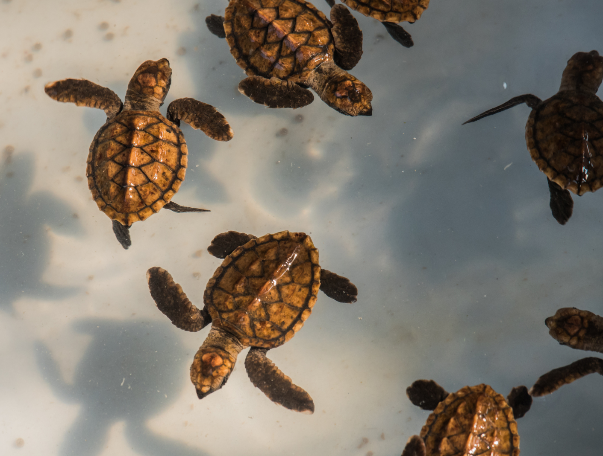

Travel Partners
When visiting the Galapagos Islands, a National Park and World Heritage Site, all visitors are expected to
act responsibly and treat the environment with respect. Below are 14 rules by the Galapagos National Park
Directorate (GNPD) that all visitors must follow:

- Visitors to any protected areas within the Galápagos National Park must be accompanied by a naturalist guide authorized by the GNPD.
- Travel only with tour operators and/or boats authorized to work in the protected areas of Galápagos.
- Remain on marked trails at visitor sites and respect signs at all times for the protection of wildlife, and for your safety.
- Maintain a distance of at least six feet (two meters) from wildlife to avoid disturbing them, even if they approach you.
- Never feed wildlife, as this can cause health problems.
- Flash photography is not permitted when taking photos of wildlife. Professional photography and videos recorded for commercial purposes must be authorized by the GNPD.
- Camping is only allowed in a few authorized areas in the Islands. Request authorization to camp at the Galápagos National Park’s offices at least 48 hours in advance.
- It is your responsibility not to introduce food, animals, or plants into the Archipelago. Cooperate fully with all environmental inspection and quarantine officials during your visit.
- Do not take or buy any products or souvenirs made from banned substances, including black coral, shells, lava rock, animal parts, or any native wood or vegetation prior to leaving Galápagos. This is illegal and must be reported.
- Practice “leave-no-trace” principles in order to maintain the beauty of the environment.
- Pack out all trash and dispose of or recycle it in the populated areas or on your tour boat.
- Smoking and/or campfires are strictly prohibited within the Galápagos National Park, as fires poses a serious risk to the flora and fauna of Galápagos.
- Fishing is only permitted on recreational tour boats authorized by the GNPD.
- Motorized aquatic sports, mini-subs, and aerial tourism activities are not permitted in the Galápagos National Park or Marine Reserve.